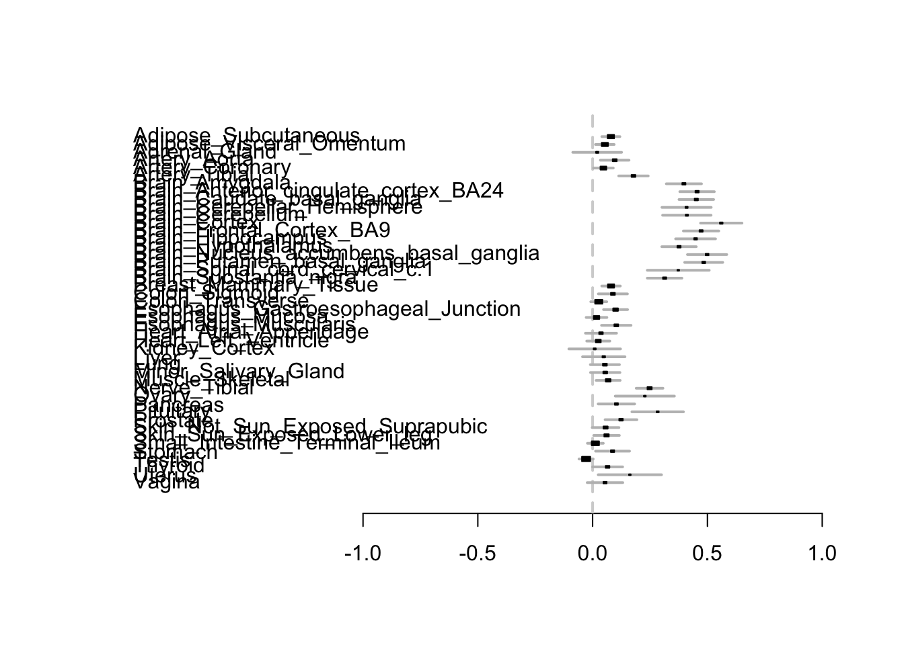

Last updated: 2020-04-18
Checks: 7 0
Knit directory: covid_mr/
This reproducible R Markdown analysis was created with workflowr (version 1.6.1). The Checks tab describes the reproducibility checks that were applied when the results were created. The Past versions tab lists the development history.
Great! Since the R Markdown file has been committed to the Git repository, you know the exact version of the code that produced these results.
Great job! The global environment was empty. Objects defined in the global environment can affect the analysis in your R Markdown file in unknown ways. For reproduciblity it’s best to always run the code in an empty environment.
The command set.seed(20200410) was run prior to running the code in the R Markdown file. Setting a seed ensures that any results that rely on randomness, e.g. subsampling or permutations, are reproducible.
Great job! Recording the operating system, R version, and package versions is critical for reproducibility.
Nice! There were no cached chunks for this analysis, so you can be confident that you successfully produced the results during this run.
Great job! Using relative paths to the files within your workflowr project makes it easier to run your code on other machines.
Great! You are using Git for version control. Tracking code development and connecting the code version to the results is critical for reproducibility.
The results in this page were generated with repository version 7ff63ef. See the Past versions tab to see a history of the changes made to the R Markdown and HTML files.
Note that you need to be careful to ensure that all relevant files for the analysis have been committed to Git prior to generating the results (you can use wflow_publish or wflow_git_commit). workflowr only checks the R Markdown file, but you know if there are other scripts or data files that it depends on. Below is the status of the Git repository when the results were generated:
Ignored files:
Ignored: .DS_Store
Ignored: analysis/.DS_Store
Untracked files:
Untracked: analysis/Untitled.Rmd
Untracked: cand_eqtl.csv
Untracked: code/helper.R
Untracked: code/normfuncs.R
Untracked: data/df.txt
Untracked: data/df_se.txt
Untracked: data/gtex8.txt
Untracked: data/m2_gtex.rds
Untracked: gene_snp_forgtex.txt
Unstaged changes:
Modified: analysis/eqtl.Rmd
Note that any generated files, e.g. HTML, png, CSS, etc., are not included in this status report because it is ok for generated content to have uncommitted changes.
These are the previous versions of the repository in which changes were made to the R Markdown (analysis/ACE2.Rmd) and HTML (docs/ACE2.html) files. If you’ve configured a remote Git repository (see ?wflow_git_remote), click on the hyperlinks in the table below to view the files as they were in that past version.
| File | Version | Author | Date | Message |
|---|---|---|---|---|
| Rmd | 7ff63ef | Sarah Urbut | 2020-04-18 | wflow_publish(“analysis/ACE2.Rmd”) |
First, we read in the data frame and organize it into a data frame of SNP-gene pair x tissues
df= read.table("~/Downloads/gtexv8.tsv",sep="\t", header=TRUE)
df$z=df$slope/df$slope_se
head(df) tissue gene_id
1 ACE2_Adipose_Subcutaneous ENSG00000130234.10
2 ACE2_Adipose_Visceral_Omentum ENSG00000130234.10
3 ACE2_Adrenal_Gland ENSG00000130234.10
4 ACE2_Artery_Aorta ENSG00000130234.10
5 ACE2_Artery_Coronary ENSG00000130234.10
6 ACE2_Artery_Tibial ENSG00000130234.10
variant_id tss_distance ma_samples ma_count
1 chrX_15675427_G_GGGCGCGGTCCTTACGTGT_b38 73279 320 527
2 chrX_15675427_G_GGGCGCGGTCCTTACGTGT_b38 73279 261 437
3 chrX_15675427_G_GGGCGCGGTCCTTACGTGT_b38 73279 134 210
4 chrX_15675427_G_GGGCGCGGTCCTTACGTGT_b38 73279 224 365
5 chrX_15675427_G_GGGCGCGGTCCTTACGTGT_b38 73279 125 202
6 chrX_15675427_G_GGGCGCGGTCCTTACGTGT_b38 73279 309 511
maf pval_nominal slope slope_se z
1 0.470536 2.18109e-04 0.0909386 0.0244211 3.7237717
2 0.488814 2.26421e-02 0.0636641 0.0278215 2.2883058
3 0.460526 8.19034e-01 -0.0145379 0.0634564 -0.2291006
4 0.486667 1.81544e-02 0.0899912 0.0378946 2.3747764
5 0.497537 4.35082e-01 -0.0310049 0.0396307 -0.7823455
6 0.452212 3.27000e-08 0.2072450 0.0369261 5.6124259#df2=data.frame(df$z)
df2=data.frame(df$slope_se)
head(df2) df.slope_se
1 0.0244211
2 0.0278215
3 0.0634564
4 0.0378946
5 0.0396307
6 0.0369261z=t(df2)
colnames(z)=df$tissue
n=sapply(colnames(z),function(x){
strsplit(x,"ACE2_")[[1]][2]})
colnames(z)=n
m=readRDS("~/Downloads/mfit_GTEX.rds")
tissues=names(m$fitted_g$Ulist)[31:79]
setdiff(tissues,colnames(z))[1] "Cells_Cultured_fibroblasts" "Cells_EBV-transformed_lymphocytes"
[3] "Spleen" "Whole_Blood" sapply(setdiff(tissues,colnames(z)),function(x){which(tissues==x)}) Cells_Cultured_fibroblasts Cells_EBV-transformed_lymphocytes
21 22
Spleen Whole_Blood
43 49 df=data.frame(t(c(z[,1:20],"Cells_Cultured_fibroblasts"=0,"Cells_EBV-transformed_lymphocytes"=0,z[,21:40],"Spleen"=0,z[,41:45],"Whole_Blood"=0)))
##check that they are the same
cbind(colnames(df),tissues)
[1,] "Adipose_Subcutaneous"
[2,] "Adipose_Visceral_Omentum"
[3,] "Adrenal_Gland"
[4,] "Artery_Aorta"
[5,] "Artery_Coronary"
[6,] "Artery_Tibial"
[7,] "Brain_Amygdala"
[8,] "Brain_Anterior_cingulate_cortex_BA24"
[9,] "Brain_Caudate_basal_ganglia"
[10,] "Brain_Cerebellar_Hemisphere"
[11,] "Brain_Cerebellum"
[12,] "Brain_Cortex"
[13,] "Brain_Frontal_Cortex_BA9"
[14,] "Brain_Hippocampus"
[15,] "Brain_Hypothalamus"
[16,] "Brain_Nucleus_accumbens_basal_ganglia"
[17,] "Brain_Putamen_basal_ganglia"
[18,] "Brain_Spinal_cord_cervical_c.1"
[19,] "Brain_Substantia_nigra"
[20,] "Breast_Mammary_Tissue"
[21,] "Cells_Cultured_fibroblasts"
[22,] "Cells_EBV.transformed_lymphocytes"
[23,] "Colon_Sigmoid"
[24,] "Colon_Transverse"
[25,] "Esophagus_Gastroesophageal_Junction"
[26,] "Esophagus_Mucosa"
[27,] "Esophagus_Muscularis"
[28,] "Heart_Atrial_Appendage"
[29,] "Heart_Left_Ventricle"
[30,] "Kidney_Cortex"
[31,] "Liver"
[32,] "Lung"
[33,] "Minor_Salivary_Gland"
[34,] "Muscle_Skeletal"
[35,] "Nerve_Tibial"
[36,] "Ovary"
[37,] "Pancreas"
[38,] "Pituitary"
[39,] "Prostate"
[40,] "Skin_Not_Sun_Exposed_Suprapubic"
[41,] "Skin_Sun_Exposed_Lower_leg"
[42,] "Small_Intestine_Terminal_Ileum"
[43,] "Spleen"
[44,] "Stomach"
[45,] "Testis"
[46,] "Thyroid"
[47,] "Uterus"
[48,] "Vagina"
[49,] "Whole_Blood"
tissues
[1,] "Adipose_Subcutaneous"
[2,] "Adipose_Visceral_Omentum"
[3,] "Adrenal_Gland"
[4,] "Artery_Aorta"
[5,] "Artery_Coronary"
[6,] "Artery_Tibial"
[7,] "Brain_Amygdala"
[8,] "Brain_Anterior_cingulate_cortex_BA24"
[9,] "Brain_Caudate_basal_ganglia"
[10,] "Brain_Cerebellar_Hemisphere"
[11,] "Brain_Cerebellum"
[12,] "Brain_Cortex"
[13,] "Brain_Frontal_Cortex_BA9"
[14,] "Brain_Hippocampus"
[15,] "Brain_Hypothalamus"
[16,] "Brain_Nucleus_accumbens_basal_ganglia"
[17,] "Brain_Putamen_basal_ganglia"
[18,] "Brain_Spinal_cord_cervical_c-1"
[19,] "Brain_Substantia_nigra"
[20,] "Breast_Mammary_Tissue"
[21,] "Cells_Cultured_fibroblasts"
[22,] "Cells_EBV-transformed_lymphocytes"
[23,] "Colon_Sigmoid"
[24,] "Colon_Transverse"
[25,] "Esophagus_Gastroesophageal_Junction"
[26,] "Esophagus_Mucosa"
[27,] "Esophagus_Muscularis"
[28,] "Heart_Atrial_Appendage"
[29,] "Heart_Left_Ventricle"
[30,] "Kidney_Cortex"
[31,] "Liver"
[32,] "Lung"
[33,] "Minor_Salivary_Gland"
[34,] "Muscle_Skeletal"
[35,] "Nerve_Tibial"
[36,] "Ovary"
[37,] "Pancreas"
[38,] "Pituitary"
[39,] "Prostate"
[40,] "Skin_Not_Sun_Exposed_Suprapubic"
[41,] "Skin_Sun_Exposed_Lower_leg"
[42,] "Small_Intestine_Terminal_Ileum"
[43,] "Spleen"
[44,] "Stomach"
[45,] "Testis"
[46,] "Thyroid"
[47,] "Uterus"
[48,] "Vagina"
[49,] "Whole_Blood" install.packages(("mashr"))Warning: package 'mashr' is not available (for R version 3.6.3)Here, we run mash by fitting in the appropriate data frame (we need at least a 2 x R matrix, the hierarhical model fit (including covariance matrices, HM weights, and variance of residuals esimates) and then compute posteriors in the object m2.
df=as.matrix(read.table("../data/df.txt"))
library("mashr")
vhat=readRDS("vhatgtex.rds")
m=readRDS("mfit_GTEX.rds")
###mash needs at least a 2xR matrix, so rbind
d=rbind(df,df)
data.strong=mash_set_data(Bhat=d,alpha=1,V=vhat)
m2 = mash(data.strong, g=get_fitted_g(m), fixg=TRUE)And now, we’re ready to plot! Please my code in the code directory for an overview of metaplot and the normalization procedure to produce posterior betas from the EZ model which assumes effects scales with their standard errors.
source("code/helper.R")
library("rmeta")
newfunc.2(1)
sessionInfo()R version 3.6.3 (2020-02-29)
Platform: x86_64-apple-darwin15.6.0 (64-bit)
Running under: macOS Catalina 10.15.4
Matrix products: default
BLAS: /Library/Frameworks/R.framework/Versions/3.6/Resources/lib/libRblas.0.dylib
LAPACK: /Library/Frameworks/R.framework/Versions/3.6/Resources/lib/libRlapack.dylib
locale:
[1] en_US.UTF-8/en_US.UTF-8/en_US.UTF-8/C/en_US.UTF-8/en_US.UTF-8
attached base packages:
[1] stats graphics grDevices utils datasets methods base
other attached packages:
[1] rmeta_3.0 workflowr_1.6.1
loaded via a namespace (and not attached):
[1] Rcpp_1.0.4 rprojroot_1.3-2 digest_0.6.25 later_1.0.0
[5] grid_3.6.3 R6_2.4.1 backports_1.1.6 git2r_0.26.1
[9] magrittr_1.5 evaluate_0.14 stringi_1.4.6 rlang_0.4.5
[13] fs_1.4.1 promises_1.1.0 whisker_0.4 rmarkdown_2.1
[17] tools_3.6.3 stringr_1.4.0 glue_1.4.0 httpuv_1.5.2
[21] xfun_0.13 yaml_2.2.1 compiler_3.6.3 htmltools_0.4.0
[25] knitr_1.28